反钩子开场
0:00–0:52 21 镜头台词「我真的受够了用钩子作为开场，所以我决定坐在这里，用更极端的行为吸引你的注意。去年11月我发布了那条讲『毕业后找不到工作』的低调视频，它带来了远超预期的反响，让我在那个无路可走的阶段再次相信了自己的选择。我把上一条视频后的全部收入与时间，都投入了这部影片。」
音乐黑场淡入，轻垫乐，节奏松弛；口播为主。
镜头高架钢梁上俯瞰车流的孤身坐姿 → 手机里回看自己的旧视频 → 雨地中央蓝衣孤身 → 行车窗外流光中仰拍人脸（手持/动态模糊）→ 洗衣房四连身『分身』；以极端取景兑现台词的反讽。
| # | 画面 | 入–出 | 时长 | 节奏 | 备注（调色/构图/运镜） |
|---|---|---|---|---|---|
| 01 | 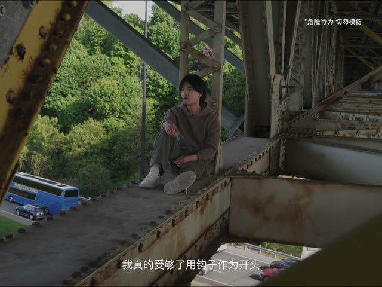 |
0:00→0:03 | 3.4s | 常规 | 构图大全景，人物坐画左钢梁、高速车流自右纵深引导，三分线 运镜高角度固定俯拍，微下俯 |
| 02 | 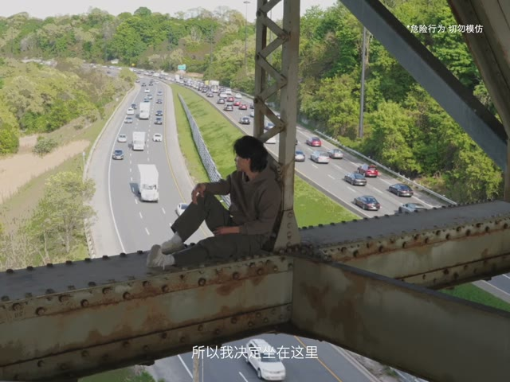 |
0:03→0:07 | 3.8s | 常规 | 构图全景，人物坐桥沿居中偏左，背景高架延伸 运镜侧逆光固定，轻微手持晃动 |
| 03 | 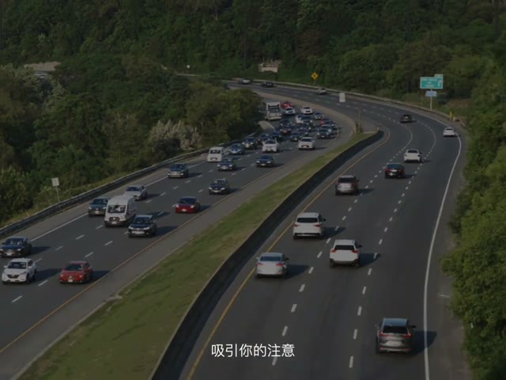 |
0:07→0:10 | 3.0s | 常规 | 构图大全景俯拍多车道车流 运镜固定高机位，车流自身运动 |
| 04 | 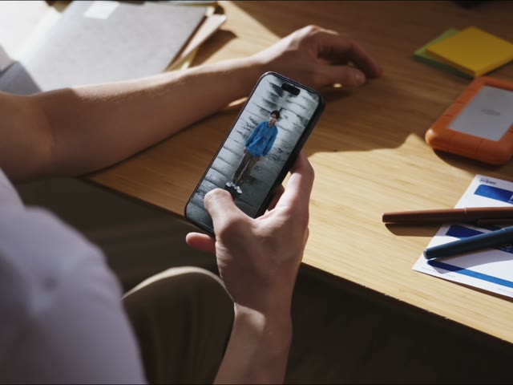 |
0:10→0:13 | 2.5s | 常规 | 构图桌面特写，手机居中浅景深（戏中戏回看旧视频） 运镜固定，微距 |
| 05 | 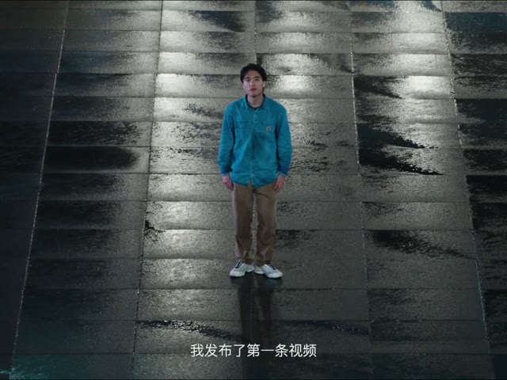 |
0:13→0:15 | 2.4s | 常规 | 构图大全景对称，人物极小居中立于湿地 运镜固定，正面镜面构图 |
| 06 | 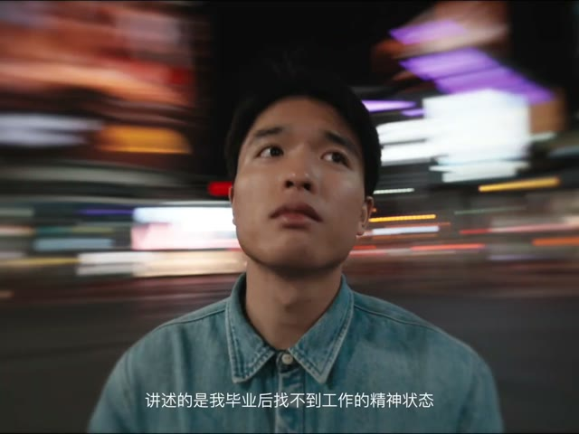 |
0:15→0:16 | 0.9s | 快切 | 构图近景人脸仰拍，背景城市流光 运镜车载手持移动，长曝光拖影 |
| 07 | 0:16→0:17 | 0.6s | 快切 | 构图近景仰拍人脸 运镜车载手持移动，流光横移 |
|
| 08 | 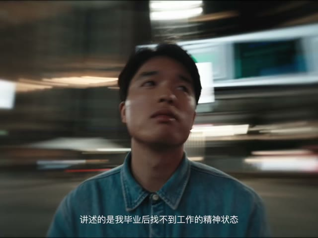 |
0:17→0:17 | 0.6s | 快切 | 构图近景仰拍人脸 运镜车载手持移动 |
| 09 | 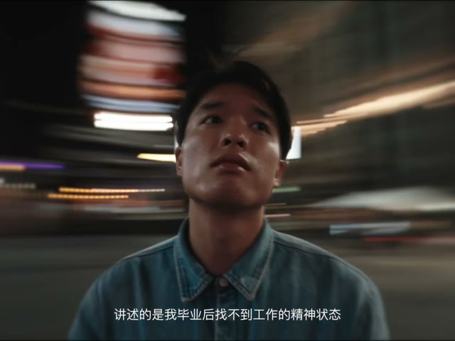 |
0:17→0:18 | 0.6s | 快切 | 构图近景仰拍人脸 运镜车载手持移动 |
| 10 | 0:18→0:20 | 2.3s | 常规 | 构图中景对称，四个『分身』并排于洗衣机前 运镜固定，正面对称 |
|
| 11 | 0:20→0:23 | 2.9s | 常规 | 构图大特写，伦勃朗侧光，人物居中（暗调口播） 运镜固定 |
|
| 12 | 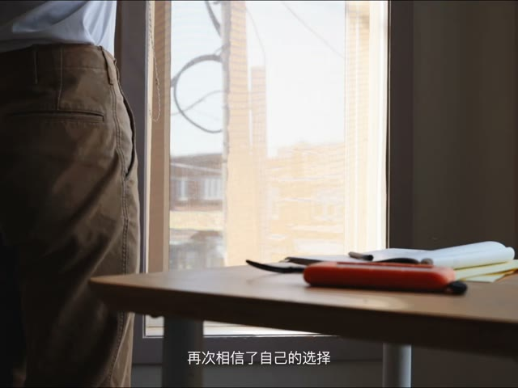 |
0:23→0:25 | 2.5s | 常规 | 构图中近景，飘窗自然光，红色笔记本点暖 运镜固定，微移 |
| 13 | 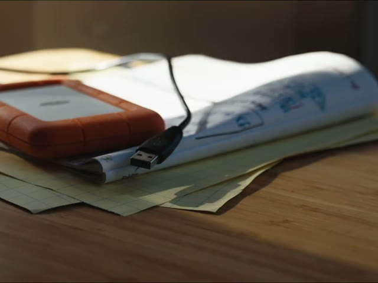 |
0:25→0:26 | 0.6s | 快切 | 构图特写俯拍翻开的书/笔记页 运镜固定，俯视 |
| 14 | 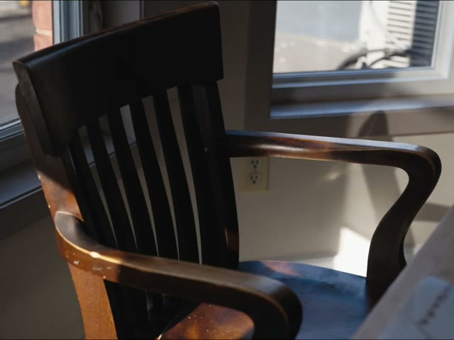 |
0:26→0:27 | 1.3s | 常规 | 构图中景静物，木椅居中 运镜固定 |
| 15 | 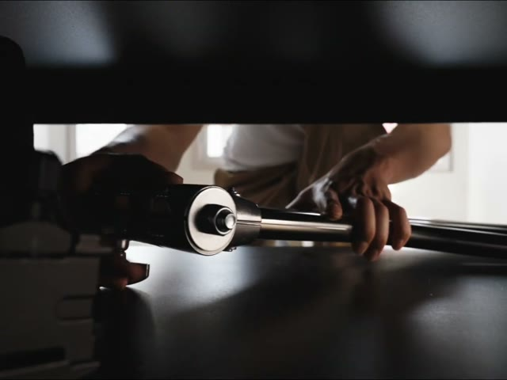 |
0:27→0:29 | 1.3s | 常规 | 构图特写，手入画调灯杆，浅景深 运镜固定，跟手微移 |
| 16 | 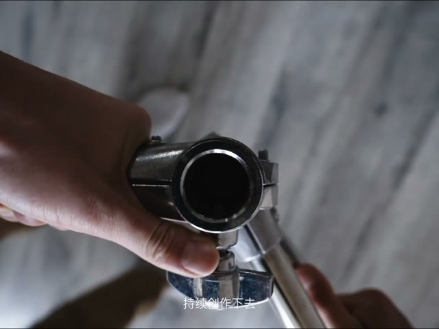 |
0:29→0:32 | 3.5s | 常规 | 构图特写器材，金属高光 运镜固定，微移找反光 |
| 17 | 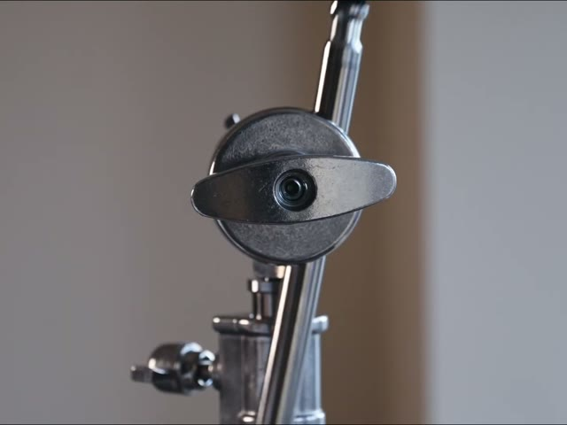 |
0:32→0:34 | 1.7s | 常规 | 构图特写灯头specular球 运镜固定 |
| 18 | 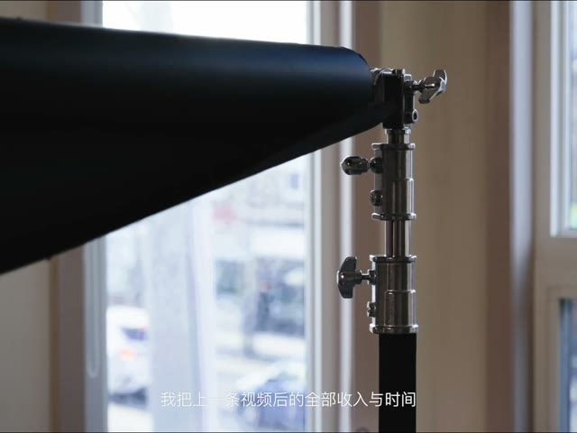 |
0:34→0:36 | 2.3s | 常规 | 构图中近景，逆光灯架于窗边 运镜固定 |
| 19 | 0:36→0:39 | 3.1s | 常规 | 构图低角度特写，地面与白鞋 运镜固定 |
|
| 20 | 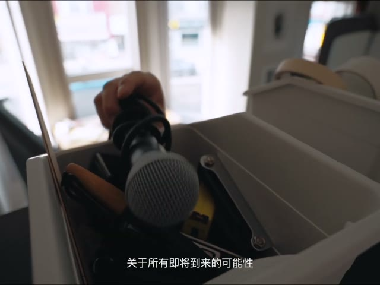 |
0:39→0:41 | 2.1s | 常规 | 构图特写，手持相机于窗边 运镜固定，微移 |
| 21 | 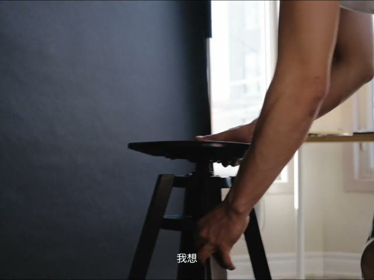 |
0:41→0:42 | 0.9s | 快切 | 构图中景，下半身入座凳子 运镜固定 |
影像的诱惑 / 野心
0:52–1:34高潮 10 镜头台词「关于所有即将到来的可能性，我想，我准备好了。」+ 英文rap字幕：I wanna be the new man of the year／I cannot be scared／I gotta do it like Nike Air。「我们迷恋这些惊奇的影像——它不仅能在短时间内传递密集的信息，还能承载观点、审美、执行力，甚至是一个人的形象本身，让表达无限接近全面。」
音乐能量峰值①（约-11dB），鼓点+英文rap推进，炫技画面卡点。
镜头黑场小人远景 → 着火的拍板与摄影机（创意硬切）→ GQ字幕 → 电影摄影机/镜头特写 → 克隆人头墙；高密度炫技镜头『演示』影像魅力，为反问蓄力。
| # | 画面 | 入–出 | 时长 | 节奏 | 备注（调色/构图/运镜） |
|---|---|---|---|---|---|
| 22 | 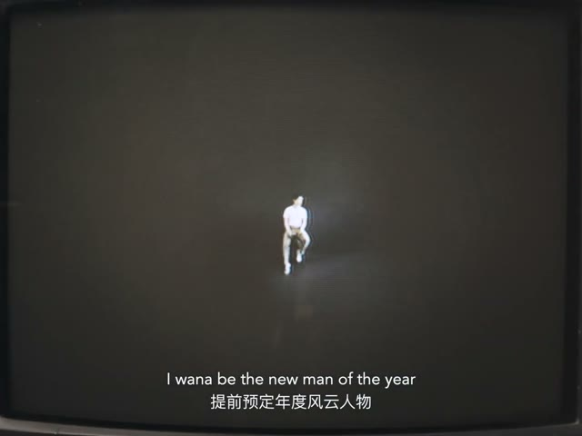 |
0:42→0:53 | 10.3s | 常规 | 构图大全景negative space，人物极小居中于光区 运镜固定，对称 |
| 23 | 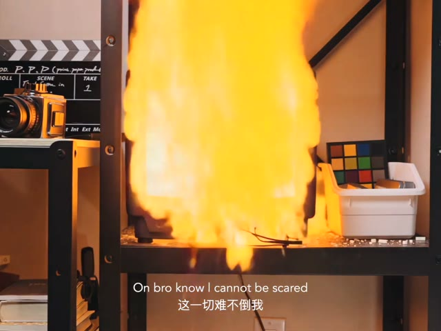 |
0:53→0:55 | 2.0s | 常规 | 构图中近景，着火的拍板/摄影机，火焰对暗背景 运镜固定 |
| 24 | 0:55→0:56 | 1.8s | 常规 | 构图特写，着火摄影机居中（创意视效） 运镜固定，火焰自身动态 |
|
| 25 | 0:56→1:03 | 7.1s | 常规 | 构图全景暗调房间，人物画左偏小 运镜固定 |
|
| 26 | 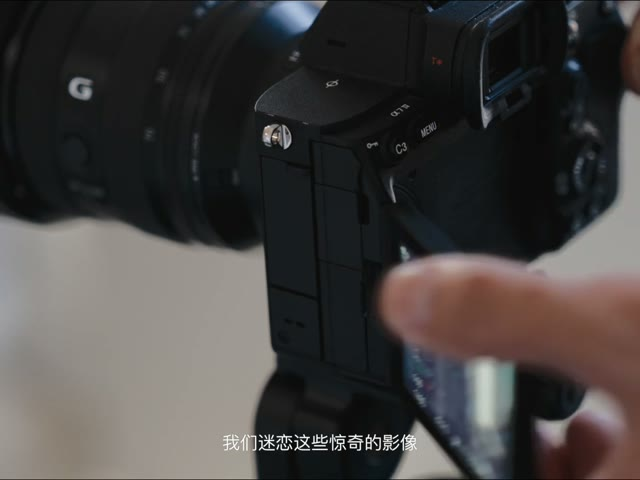 |
1:03→1:07 | 3.6s | 常规 | 构图特写电影摄影机镜头 运镜固定，微移 |
| 27 | 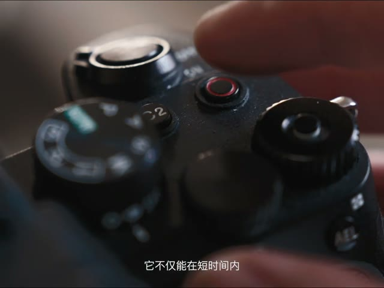 |
1:07→1:08 | 0.9s | 快切 | 构图特写摄影机顶部拨盘 运镜固定 |
| 28 | 1:08→1:12 | 4.0s | 常规 | 构图黑场/字幕负空间 运镜固定 |
|
| 29 | 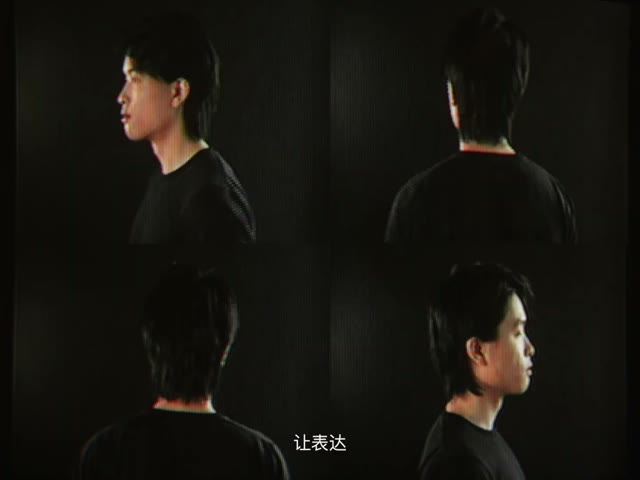 |
1:12→1:23 | 11.3s | 常规 | 构图中近景，重复人脸（克隆） 运镜固定，对称 |
| 30 | 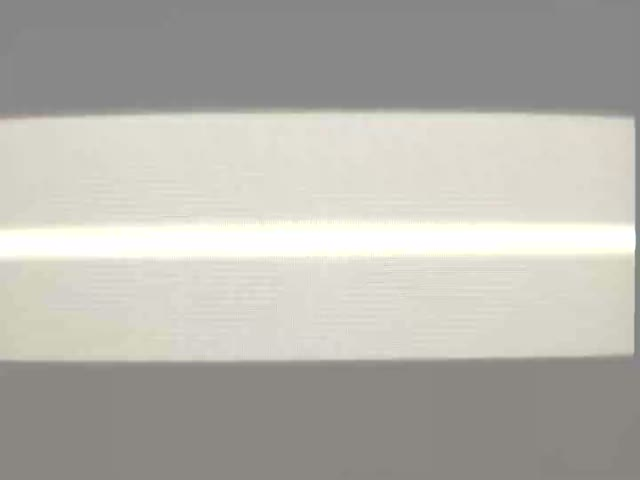 |
1:23→1:24 | 0.5s | 快切 | 构图特写，顶部灯具/天花高光 运镜固定，疑微上摇 |
| 31 | 1:24→1:34 | 10.9s | 常规 | 构图特写暗调，手臂/局部 运镜固定 |
“全面”真的重要吗 / 垂直化批判
1:34–2:01 4 镜头台词「可这种全面，当真重要吗？我们似乎更关注垂直度而非广度：人设要垂直、赛道要细分，哪怕没什么新东西，也能惯以『沉浸式』的标签。但这过度算计的代价，究竟会是什么呢？」
音乐回落到中低，氛围 Pad 垫底，给反问留呼吸。
镜头电视蓝噪雪花 → 暗处手指向黑碗滴落 → 迷失感的门洞/走廊；用『信号噪点/迷失空间』对位『算计的代价』。
| # | 画面 | 入–出 | 时长 | 节奏 | 备注（调色/构图/运镜） |
|---|---|---|---|---|---|
| 32 | 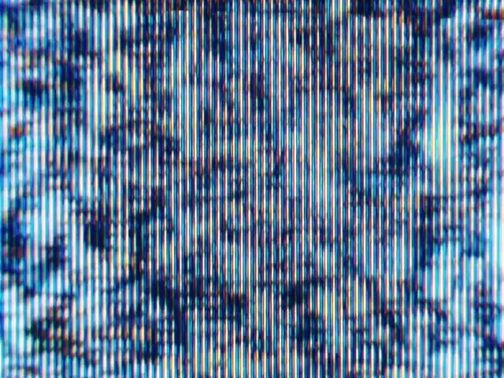 |
1:34→1:35 | 0.7s | 快切 | 构图满屏蓝色噪点雪花（媒介噪音） 运镜固定 |
| 33 | 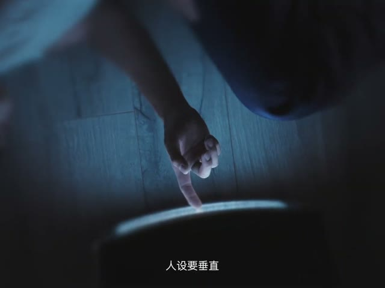 |
1:35→1:45 | 9.8s | 常规 | 构图特写，暗背景中手向黑碗滴落，主体居中 运镜固定，悬疑低调光 |
| 34 | 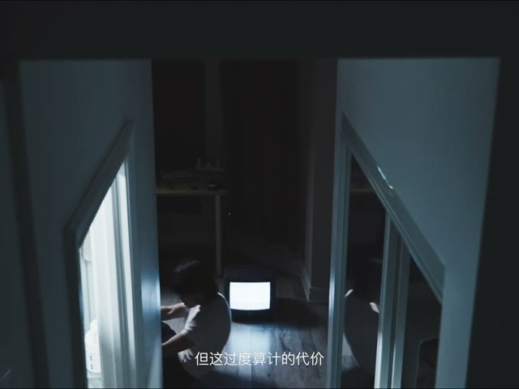 |
1:45→1:55 | 10.1s | 常规 | 构图中景，门框透光的迷失空间 运镜固定 |
| 35 | 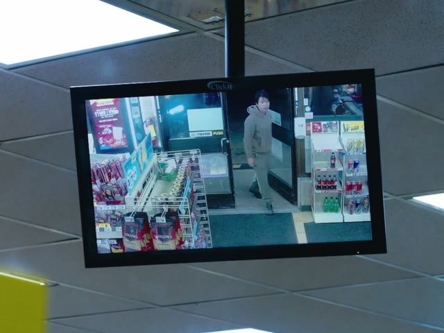 |
1:55→2:01 | 6.1s | 常规 | 构图中景，监视器画中画（店内CCTV） 运镜固定 |
注意力的生意
2:01–2:55 31 镜头台词「就拿我所处的 Vlog 赛道来说：观众想我出剪辑教程，厂商要寄器材做产品推广，而我只需要不断重复自己，作为一名内容的供应商。这种供需关系看似各司其职、维持平衡，却让我感觉自己在参与一场贩卖注意力的生意。当我核对这交易里的数字——五秒完播率、前两秒跳出率、涨粉、带哪些话题又能获得额外曝光——当这一切都能被总结成公式，手段自然取代了目的，让本应施予美的嘴，不断发出最响亮的噪音。」
音乐中速平稳，节拍感强；口播密集，画面卡点配数据词。
镜头7-Eleven 挂钟 → 满架彩色饮料/店面对称镜头/夜饮 → 俯拍双手打字 → 手写『五秒完播率』于掌心 → 在格纸上画维恩圈/便签墙；用便利店消费意象与具体数据指标坐实『贩卖注意力』。
| # | 画面 | 入–出 | 时长 | 节奏 | 备注（调色/构图/运镜） |
|---|---|---|---|---|---|
| 36 | 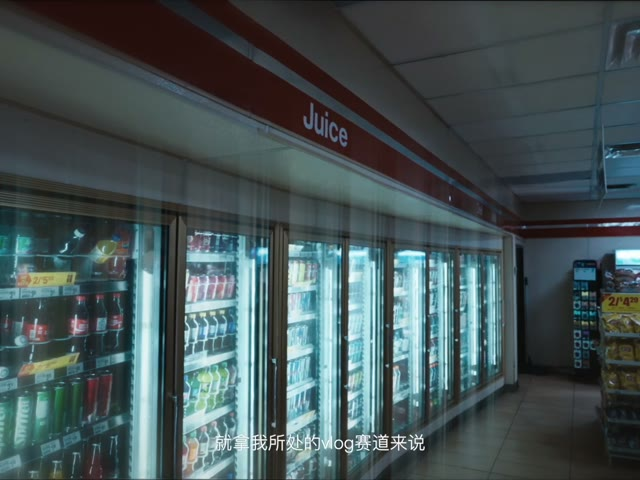 |
2:01→2:03 | 2.0s | 常规 | 构图全景，便利店饮料冷柜墙对称 运镜固定，疑缓横移 |
| 37 | 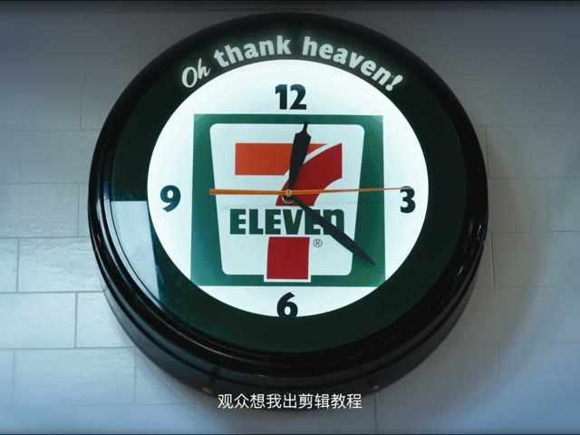 |
2:03→2:06 | 2.3s | 常规 | 构图特写，7-Eleven 挂钟正面居中（品牌红绿） 运镜固定 |
| 38 | 2:06→2:06 | 0.6s | 快切 | 构图全景饮料货架，密集彩色色块 运镜横移/平移 |
|
| 39 | 2:06→2:07 | 0.6s | 快切 | 构图中景货架（价签 2/5） 运镜横移 |
|
| 40 | 2:07→2:08 | 1.1s | 常规 | 构图中景货架，色块阵列 运镜横移 |
|
| 41 | 2:08→2:09 | 0.7s | 快切 | 构图中景，手入画从货架取饮料 运镜固定，跟手 |
|
| 42 | 2:09→2:09 | 0.6s | 快切 | 构图全景货架瓶装区 运镜横移 |
|
| 43 | 2:09→2:10 | 0.7s | 快切 | 构图中景货架绿色罐区 运镜横移/固定 |
|
| 44 | 2:10→2:10 | 0.5s | 快切 | 构图全景，7-Eleven 夜店面对称，人物居中入口（SLURPEE 霓虹） 运镜固定，镜面对称 |
|
| 45 | 2:10→2:11 | 0.5s | 快切 | 构图中景，招牌下夜饮，环境霓虹 运镜仰拍固定/微移 |
|
| 46 | 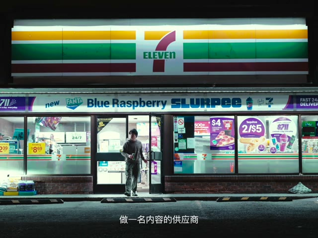 |
2:11→2:16 | 5.5s | 常规 | 构图中近景人物饮罐，背景虚化招牌 运镜手持微晃 |
| 47 | 2:16→2:21 | 4.9s | 常规 | 构图特写，便利店局部/手部 运镜固定 |
|
| 48 | 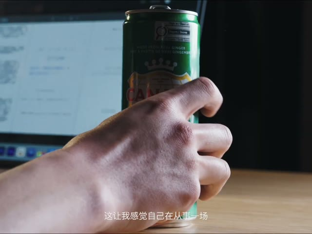 |
2:21→2:22 | 0.5s | 快切 | 构图俯拍特写，双手于笔电键盘 运镜固定，俯视 |
| 49 | 2:22→2:22 | 0.5s | 快切 | 构图特写，拉环/罐口（消费符号） 运镜固定，微距 |
|
| 50 | 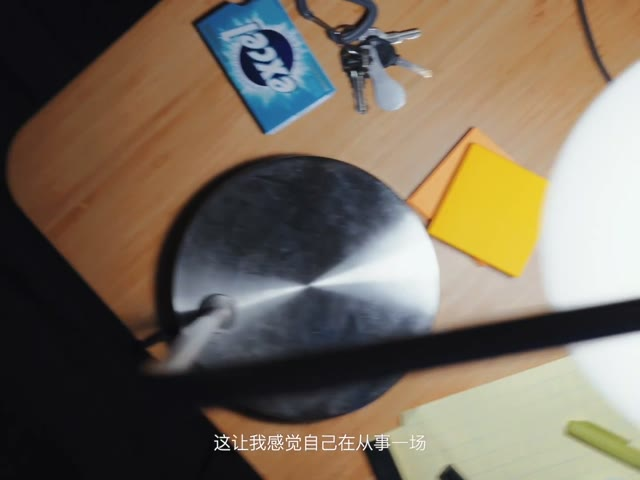 |
2:22→2:23 | 0.6s | 快切 | 构图俯拍特写，桌面钥匙/便签 运镜固定，俯视 |
| 51 | 2:23→2:25 | 2.1s | 常规 | 构图俯拍特写，笔电键盘平面构图（贩卖注意力） 运镜固定，俯视 |
|
| 52 | 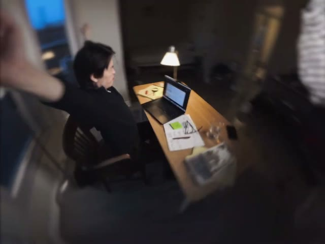 |
2:25→2:32 | 6.9s | 常规 | 构图高角度中景，案头工作 运镜固定，俯视 |
| 53 | 2:32→2:33 | 1.1s | 常规 | 构图特写，手于纸面（核对数字） 运镜固定 |
|
| 54 | 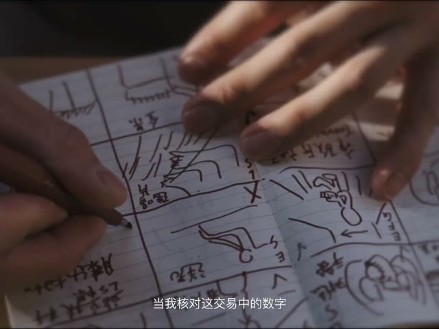 |
2:33→2:34 | 0.5s | 快切 | 构图特写俯拍，手在格纸上画图 运镜固定，跟笔微移 |
| 55 | 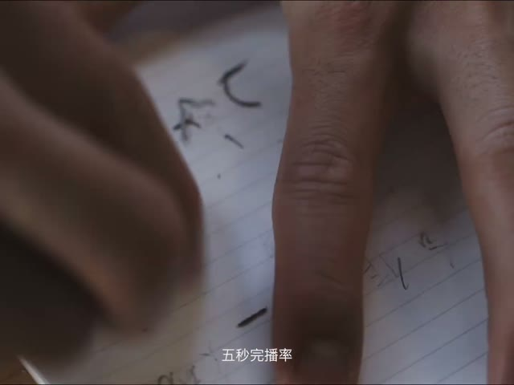 |
2:34→2:35 | 1.3s | 常规 | 构图大特写，掌心手写『五秒完播率』 运镜固定，微距 |
| 56 | 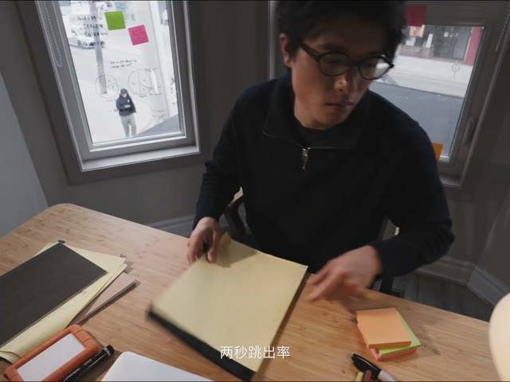 |
2:35→2:36 | 0.9s | 快切 | 构图中近景，戴镜伏案，窗光便签墙 运镜固定 |
| 57 | 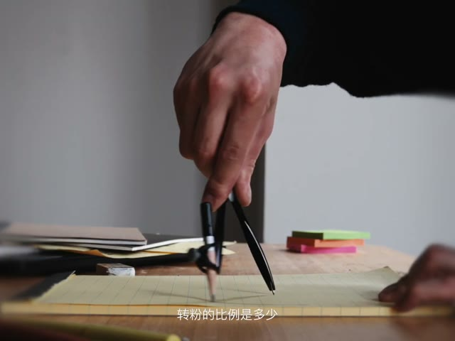 |
2:36→2:37 | 1.2s | 常规 | 构图特写，手持笔/剪刀动作 运镜固定，跟手 |
| 58 | 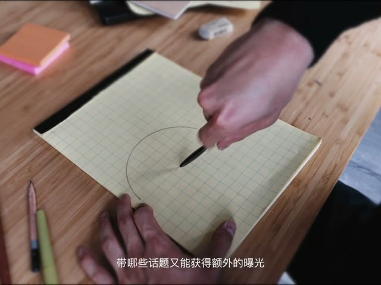 |
2:37→2:38 | 0.6s | 快切 | 构图俯拍特写，格纸上画维恩圈 运镜固定，俯视 |
| 59 | 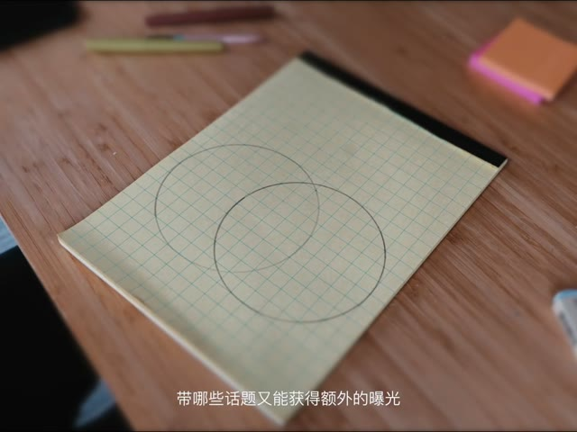 |
2:38→2:38 | 0.8s | 快切 | 构图俯拍特写，绘维恩双圆 运镜固定，俯视 |
| 60 | 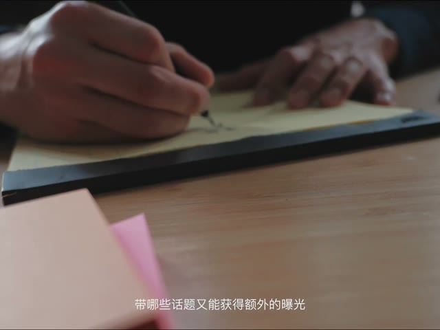 |
2:38→2:40 | 1.5s | 常规 | 构图特写，手写字于便签 运镜固定 |
| 61 | 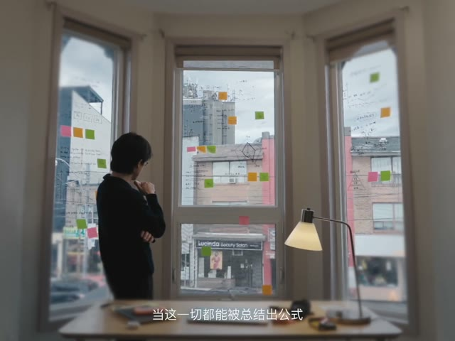 |
2:40→2:42 | 2.2s | 常规 | 构图中景剪影，人立于飘窗逆光 运镜固定 |
| 62 | 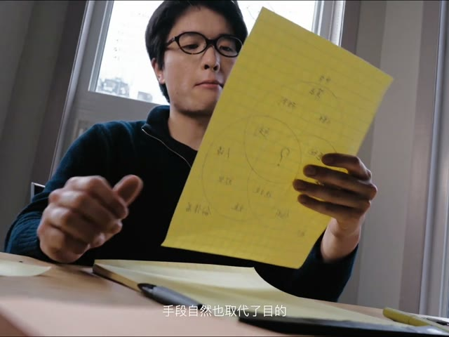 |
2:42→2:45 | 2.8s | 常规 | 构图中近景，举黄纸于面前（公式） 运镜固定 |
| 63 | 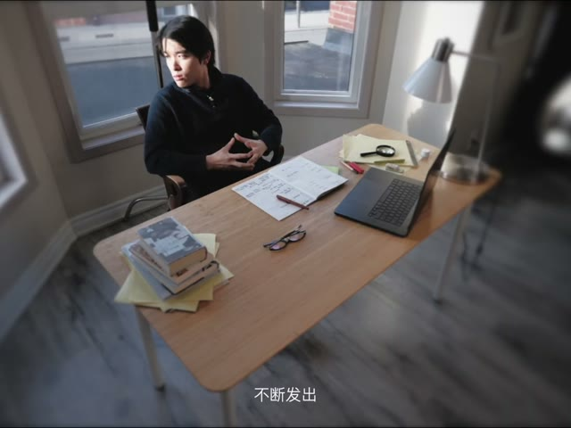 |
2:45→2:49 | 4.5s | 常规 | 构图中景，伏案口播 运镜手持微晃 |
| 64 | 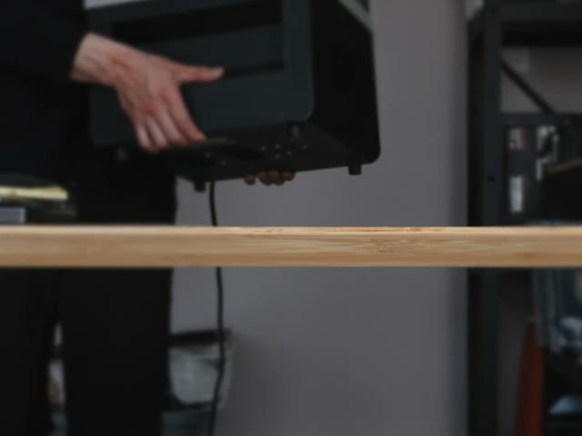 |
2:49→2:52 | 2.3s | 常规 | 构图特写，手伸向投影/CRT 设备 运镜固定，跟手 |
| 65 | 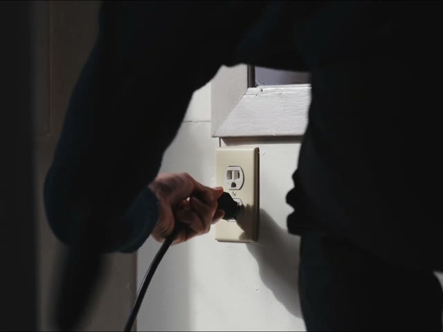 |
2:52→2:53 | 1.0s | 快切 | 构图特写，手插电缆 运镜固定 |
| 66 | 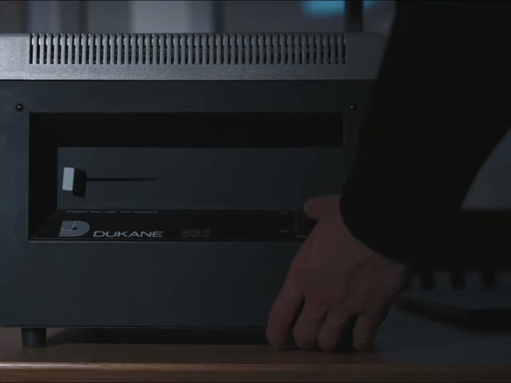 |
2:53→2:56 | 2.8s | 常规 | 构图特写，投影/CRT 机身 运镜固定 |
三向奔赴 / 算法时代
2:55–3:23 18 镜头台词「我知道，这绝不是创作者单方面的问题，而是与观众和平台的三向奔赴。如果网络环境是我们集体意识的投射，那么算法时代，必然也是我们共同塑造的『业』。」
音乐弦乐微起，氛围庄重；为转入正题铺垫。
镜头投影出『平台·观众·创作者』三圆维恩图（中心一个问号，标注互利/互配）→ 手掌探进投影 → 逆光沉思的口播变体（强光斑）；把抽象论点画成可见的投影图示。
| # | 画面 | 入–出 | 时长 | 节奏 | 备注（调色/构图/运镜） |
|---|---|---|---|---|---|
| 67 | 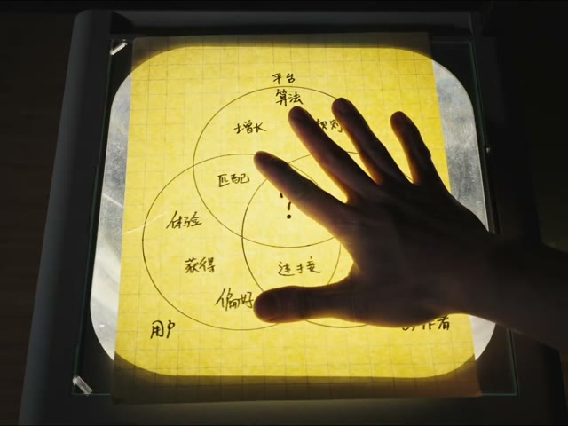 |
2:56→2:56 | 0.7s | 快切 | 构图特写，投影『平台·观众·创作者』三圆维恩图+问号，手探入光 运镜固定，手部动态 |
| 68 | 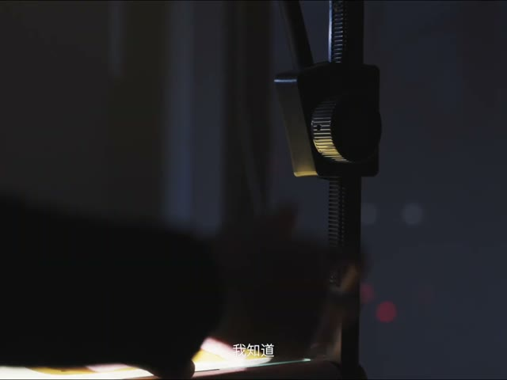 |
2:56→2:59 | 2.4s | 常规 | 构图中近景，灯/投影机暗调 运镜固定 |
| 69 | 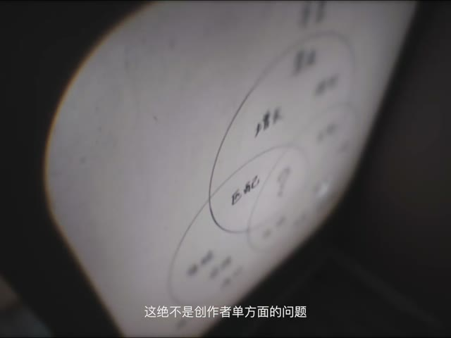 |
2:59→3:00 | 1.5s | 常规 | 构图特写，投影圆形图带文字 运镜固定 |
| 70 | 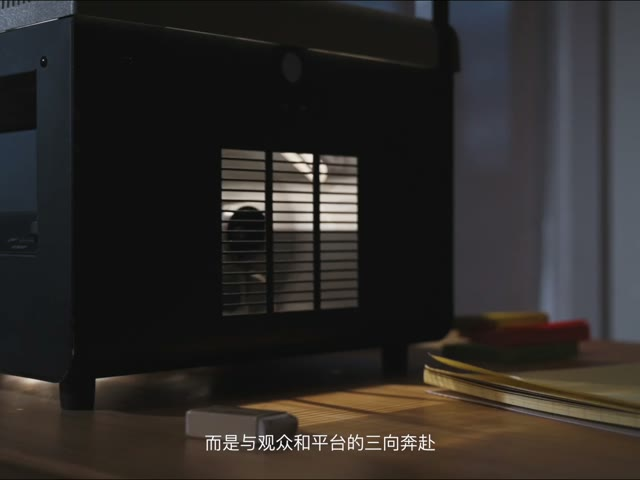 |
3:00→3:03 | 3.0s | 常规 | 构图中景，窗帘百叶+投影 运镜固定 |
| 71 | 3:03→3:04 | 1.3s | 常规 | 构图特写，投影大字『创作者』虚焦 运镜固定，疑变焦 |
|
| 72 | 3:04→3:06 | 1.6s | 常规 | 构图中近景，逆光沉思口播，强镜头光斑 运镜固定 |
|
| 73 | 3:06→3:07 | 1.3s | 常规 | 构图特写，投影『互利』二字 运镜固定 |
|
| 74 | 3:07→3:08 | 0.7s | 快切 | 构图中近景，逆光思考口播 运镜固定 |
|
| 75 | 3:08→3:09 | 0.7s | 快切 | 构图特写，投影『算』字虚焦 运镜固定 |
|
| 76 | 3:09→3:10 | 1.4s | 常规 | 构图特写，投影问号/虚焦图形 运镜固定 |
|
| 77 | 3:10→3:11 | 1.4s | 常规 | 构图中近景，逆光口播（集体意识投射） 运镜固定 |
|
| 78 | 3:11→3:13 | 1.3s | 常规 | 构图剪影中景，人于投影机旁 运镜固定 |
|
| 79 | 3:13→3:14 | 1.6s | 常规 | 构图特写，投影维恩图带『?·互利·互配』 运镜固定 |
|
| 80 | 3:14→3:16 | 1.7s | 常规 | 构图全景暗调圆厅，人物居中极小 运镜固定，空间仪式感 |
|
| 81 | 3:16→3:17 | 1.2s | 常规 | 构图中景，投影图打在桌面 运镜固定 |
|
| 82 | 3:17→3:18 | 0.6s | 快切 | 构图黑场/字幕（共同塑造的业力） 运镜固定 |
|
| 83 | 3:18→3:18 | 0.5s | 快切 | 构图特写，手影投在同心圆上 运镜固定，手部动态 |
|
| 84 | 3:18→3:19 | 0.7s | 快切 | 构图特写，投影圆图/手影 运镜固定 |
图书馆：文学的参照系
3:23–4:39 15 镜头台词「我在这个图书馆好不容易找到这几本中文书，这本讲鲁迅。我就想：如果鲁迅活到今天成了文学博主，会怎样？为什么当下的创作环境出不了『把豪门恩怨写成短句的张爱玲』？三毛的撒哈拉是不是也该顺应趋势拍成 Vlog 而不是写成日记？为什么作家的目标是出书、画家的理想是进美术馆，而当下视频创作者的终点，却是挂在小黄车、抽那么几成佣金？」
音乐好奇/轻快，能量中等平稳。
镜头电梯按钮（↑）进馆 → 宏大图书馆中庭/红柱玻璃环廊/螺旋楼梯（鱼眼广角建立镜头）→ 书架长廊间举书直述（vlog式）；用文学/绘画的『终点』反衬视频创作的『终点』。
经得起时间检验
4:39–5:43 22 镜头台词「在当下的创作环境中，我到底想做些什么——我想做出经得起时间检验的内容。或许在未来，当人们研究短视频到底归属于何种文化形式时，会发现我们依旧拥有过追求精神体验的选择。即便书籍渐渐远离萤幕，真诚、思辨、审美体验，那些先前文化类型具备的特质，也依旧悄悄进行着。」
音乐暖意渐起（约-14dB小高点），抒情铺陈。
镜头图书馆伏案 → 红色复古打字机敲字（特写多角度）→ 公寓飘窗写作/俯拍案头 → 翻窗爬出 → 仰拍屋檐对蓝天；打字机=慢工留存，翻窗上屋顶=换一个维度的视角。
还有余地 / 真诚宣言
5:43–6:19 15 镜头台词「所以我感觉，我们还留有余地。似乎只要带着真诚的生命体验、对追求完美的略带偏执、以及充满信心的个人主观，就总还是能做出些新的东西，让创作越过浮躁喧嚣，往那尚未命名的远方前行。」+ 字幕：we're taller in another dimension／you say we're smaller。
音乐抒情推进，弦乐铺底，临近高潮。
镜头屋顶上读书（城市为背景）→ 屋脊剪影/伸手向天 → 落日烟花俯瞰城市 → 翻开的书特写；屋顶/天梯=向上与开阔，把『余地』具象成物理高度。
歌词高潮 / 从幻梦中惊醒
6:19–6:43高潮 8 镜头台词英文歌词：Since I was seventeen（自从十七岁起）／Now we wake from a dream（如今从幻梦中惊醒）／Well baby what was that（难道这一切都不重要吗）。
音乐能量峰值②（约-8dB，全片最强），纯歌词/音乐驱动。
镜头桥下行走 → 滑板长板 POV 贴地疾驰（低机位）→ 穿过工业天桥与逆光路面；纯卡点montage制造『动起来、醒过来』的体感节奏。
别忘记你在乎什么
6:43–7:21 15 镜头台词「就算身处这个人人都在卷生卷死的环境中，也依然会有人愿意洞察背后那个真正让人饥饿的原因。这也许与追求数据增长的目标不同，但完全没有关系。在谁都可以上传内容、成为创作者的时代，趋势瞬息万变，初衷可能随之动摇，但至少不要忘记你所在乎什么、是什么让你为自己感到骄傲；最重要的，是请尽可能表达出你真实的心声。」
音乐中段能量回升（约-16dB），口播稳定。
镜头在高架钢桁架上攀爬/俯身（戴领夹麦边走边讲）→ 双脚悬在高架外、车流在下 → 坐在钢梁上俯瞰高速 → 绿地小径航拍；用身体悬置的实拍风险，给『表达真实心声』加重。

元层自白 / 行动号召
7:21–8:31 1 镜头台词「上世纪末，电影的平均镜头时长在 6–8 秒，而现在几乎每 3 秒就要切一次画面；我这期视频对镜讲话的部分，平均镜头时长刚好 2 秒。当注意力不断被压缩、旧形式越来越难承载新节奏，我们到底能采取怎样建设性的行动？我想我提供了一个例子——在当下努力创作，可以达到怎样的完成度。我若能做到，相信你也一定可以。期待更多人加入做这类视频，一起从产业结构上改变内容创作的生态。接下来我希望维持这种不受干扰的叙事方式；理念契合的品牌也欢迎联系我。希望我们尽快相见。」
音乐退到较静（约-24dB），人声为主，给收口让位。
镜头单一连续长镜（约70秒）——白T手持麦克风、带书架房间、侧窗自然光的稳定中景；亲手报出自己的平均镜头时长，把『形式』摊开当『论据』。
| # | 画面 | 入–出 | 时长 | 节奏 | 备注（调色/构图/运镜） |
|---|---|---|---|---|---|
| 160 | 7:21→8:31 | 69.8s | 长镜 | 构图中景，白T手持麦直面镜头，书架房间侧窗光 运镜固定，约70s一镜到底 |
幕后混剪 / 片尾
8:31–8:43 3 镜头台词（无旁白）字幕『改变内容创作的生态』余韵 → 片尾卡：羊闻道制作。
音乐片尾花絮配乐回升（约-13dB），快速回收。
镜头分屏花絮——挑杆收音/案头俯拍/公寓拍摄 + 电视雪花上的手影回扣 → 房间空镜叠『羊闻道制作』；以揭示制作过程收尾，呼应开场坦诚人格并集中回收母题。
| # | 画面 | 入–出 | 时长 | 节奏 | 备注（调色/构图/运镜） |
|---|---|---|---|---|---|
| 161 | 8:31→8:35 | 3.3s | 常规 | 构图分屏，挑杆收音/案头俯拍幕后 运镜手持/固定拼贴 |
|
| 162 | 8:35→8:37 | 2.3s | 常规 | 构图分屏，拍摄花絮 + 电视雪花上的手影（母题回收） 运镜固定拼贴 |
|
| 163 | 8:37→8:43 | 6.5s | 常规 | 构图全景空镜，房间叠『羊闻道制作』片尾卡 运镜固定 |